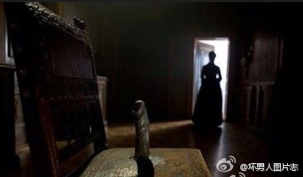
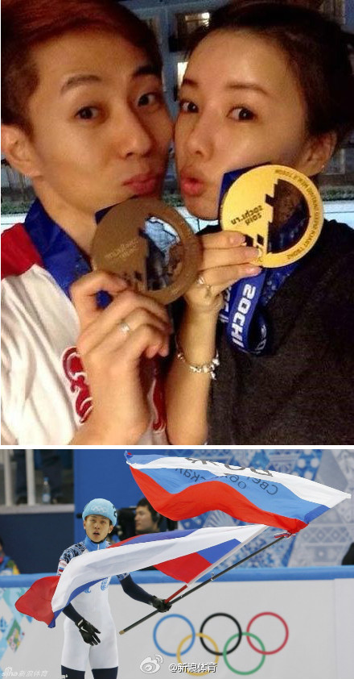

//@Escudo:真相了… //@Hanamii:@坏男人图片志:女人以为男人最在乎的是性 男人以为女人最在乎的是钱 其实事实恰恰相反 女人最在乎的才是性 男人最在乎的才是钱【强烈推荐@坏男人图片志，男人滴秘密你也能知道 】 
看着跟日本的社会派推理作品似的……韩国如果推理创作强大估计已经写出过这样的作品了吧？@新浪体育:本届冬奥会，以“冰上强国”自居的韩国目前仅有一金进账。而在8年前还是韩国队功臣的安贤洙，如今却代表俄罗斯夺得金牌。究竟是怎样的原因导致的安贤洙被逼离开了自己祖国，成为别人的英雄？这还要从韩国冰上联盟的派系斗争说起……请看深度分析【揭秘安贤洙如何遭排挤离韩国】：网页链接 
"这个套餐在香港并非最低，原因是香港有竞争" 可以用同样的理由解释美国的超高价格吗？ //@CatChen: //@FB覃超Alex:权力导致腐败！ //@_-冰翼-_:---:抱歉，此微博已被作者删除。查看帮助： 网页链接